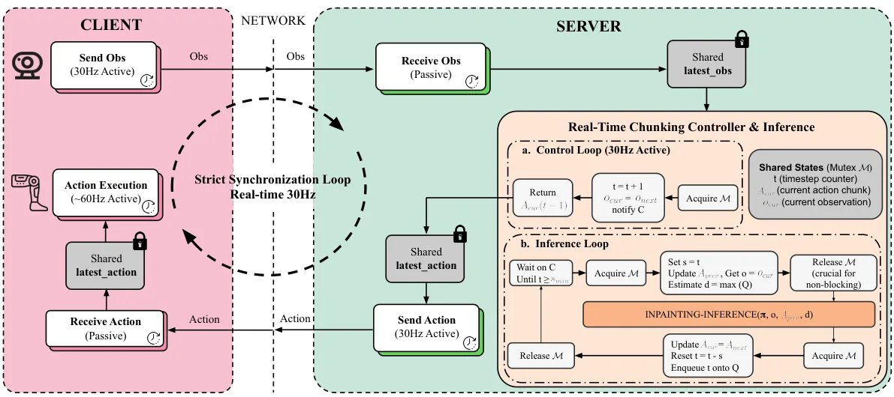
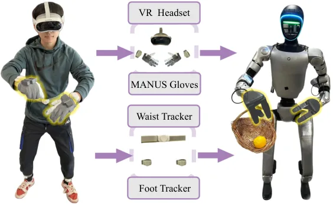
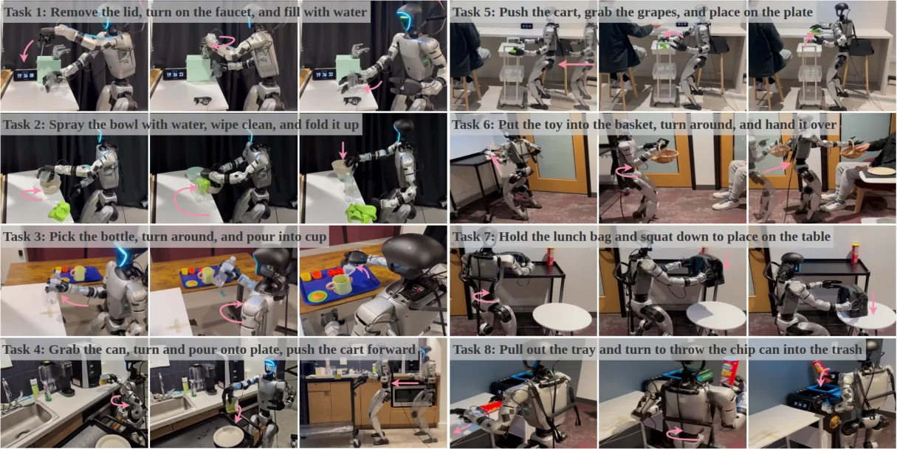

💡速记层 · 思想 / 逻辑 / 方法
默认读完就走的一层——只讲思想、逻辑、方法；效果只作验证。要核对原文再看下方「深读层」。
- 人形 loco-manipulation 需要大量遥操作数据，但数据采集代价极高、难以规模化。
- 人手 egocentric 视频是天然替代品——丰富、廉价——但人类与人形机器人之间存在根本的运动学和动力学差异（动作频率、自由度、运动模式都不同），单一模型无法同时学好两个分布。
- 关键洞察：VLM 预训练阶段不需要学精确关节控制——只需学「任务语义」和「视觉表征」，next-step 单步 48-DoF 任务空间动作预测就够了（用 FAST 离散 token 轻量化实现）。
- 关节空间的精确控制交给独立的 flow-based action expert（MM-DiT 架构），post-train 于高质量真实人形数据，避开混合训练的根本矛盾。
- 最终只需 80 条 task-specific 轨迹 fine-tune action expert，即可在 8 个长程 loco-manip 任务上超越用 10 倍以上数据训练的所有基线。
在 8 个长程人形 loco-manip 任务上，Ψ0 的平均整体成功率超过第二名 GR00T N1.6 至少 40%，且所用预训练数据 <1/10、实机数据仅 30h。消融实验表明：EgoDex 预训练、HE post-training、RTC、MM-DiT 架构每一项都不可缺。
点开看关键数字
- 预训练：EgoDex ~829h + Humanoid Everyday 31h（共 ~860h）。
- post-training：Humanoid Everyday 数据集（~3M 帧，约 30h），32 x A100，~30h 训练时间。
- fine-tuning：每个 task 仅 80 条遥操作轨迹，40000 steps。
- baselines 败北：π0.5、GR00T N1.6、InternVLA-M1、H-RDT、EgoVLA、Diffusion Policy、ACT，所有任务所有基线均被超越。
- RTC 在 ablation 中把 dual-arm carry 从 2/10 提升到 9/10（Table I, p.8）。
- 预训练仅用 EgoDex（无 HE）：overall 6/10 → 8/10（post-training on HE 后）。
Track A（人形/移动操作 VLA）直接命中：这是 2026 年迄今数据效率最高的人形 VLA 范式——egocentric 预训练 + 解耦 flow expert 的组合可直接应用于 HU_M01 平台。Track B（足式先进算法）也命中：论文的 whole-body control 策略（RL lower-body controller + 上体 VLA 解耦）、RTC 推理延迟处理、遥操作系统设计，对足式平台 loco-manip 开发有直接参考价值。
◆核心观点 · 证据
每条 = 中文论点 + 📍页/节 + 🔤逐字原文(Ctrl-F 锚点) + 🀄译文 + 💡解读。
While existing approaches often attempt to address this fundamental problem by co-training on large and diverse human and humanoid data, we argue that this strategy is suboptimal due to the fundamental kinematic and motion disparities between humans and humanoid robots. Therefore, data efficiency and model performance remain unsatisfactory despite the considerable data volume.
Ψ0 decouples the learning process to maximize the utility of heterogeneous data sources. Specifically, we propose a staged training paradigm with different learning objectives: First, we autoregressively pre-train a VLM backbone on large-scale egocentric human videos to acquire generalizable visual-action representations. Then, we post-train a flow-based action expert on high-quality humanoid robot data to learn precise robot joint control.

in contrast to approaches that scale with noisy Internet clips or heterogeneous cross-embodiment robot datasets, we demonstrate that pre-training on high-quality egocentric human manipulation data followed by post-training on domain-specific real-world humanoid trajectories yields superior performance.
Ψ0 achieves the best performance using only about 800 hours of human video data and 30 hours of real-world robot data, outperforming baselines pre-trained on more than 10× as much data by over 40% in overall success rate across multiple tasks.
Ψ0 is a foundation model that adopts a triple-system architecture, following prior work. As shown in Fig. 2, the high-level policy consists of two end-to-end–trained components: a vision–language backbone (system-2) and a multi-modal diffusion transformer (MM-DiT) action expert (system-1). We use the state-of-the-art vision–language foundation model Qwen3-VL-2B-Instruct as system-2. The action expert is implemented as a flow-based MM-DiT inspired by Stable Diffusion 3, containing approximately 500M parameters.
MM-DiT consistently outperforms the DiT variant. This improvement can be attributed to MM-DiT's dual-modulation design and its joint attention mechanism, which integrates VL features from the VLM backbone with Action (A) branch representations. Our analysis suggests that naive DiT, originally designed for text-conditioned image generation, provides weaker conditioning when applied to VL-guided action prediction.
To faithfully simulate inference delay during training, we randomly remove diffusion noise from the first d = uniform(0, dmax) tokens and mask them out in the loss computation in Eq. 2. Here, dmax ∈[0, H −s) denotes the maximum inference delay in timesteps, while H and s correspond to the action chunk prediction horizon and the execution horizon, respectively.

By using a small set of wearable trackers and separating locomotion from in-place whole-body actions, our framework enables single-operator humanoid teleoperation with improved locomotion stability across diverse task scenarios. Furthermore, the combination of wrist trackers and MANUS gloves alleviates common occlusion and out-of-view issues in vision-based VR tracking, enabling accurate and reliable upper-body and hand tracking.

our model outperforms all baselines by a large margin. Our model exhibits the most stable performance across all eight long-horizon dexterous loco-manipulation tasks. Notably, it achieves an average overall success rate that is at least 40% higher than that of the second-best baseline, GR00T-N1.6, which is the most recently released humanoid foundation model.

We will open-source the entire ecosystem to the community, including a data processing and training pipeline, a humanoid foundation model, and a real-time action inference engine.
⎘开源状态 · 实时核查（2026-06）
基于 STEP 0 实时 GitHub/HuggingFace 检索结果，当前开源状态极佳——论文与代码同步发布，Apache-2.0 许可。
- 代码
- 已开源 github.com/physical-superintelligence-lab/Psi0（Apache-2.0；训练/推理/遥操作全流程；2600+ stars）
- 权重
- 已开源 USC-PSI-Lab/psi-model（VLM backbone + action expert 预训练权重；fine-tuning 支持）
- 数据集
- 已开源 USC-PSI-Lab/psi-data（9 个真实世界遥操作任务 + SIMPLE 仿真任务数据）
- 许可证
- Apache 2.0 允许商业使用、修改、分发（需署名）
- 硬件平台
- 部分 基于 Unitree G1；依赖 AMO RL lower-body controller（需另行配置）
We introduce Ψ0, an open foundation model accompanied by a complete open-source suite for teleoperation, learning infrastructure, and deployment.
⚖批判 · 评级
① 思想清晰且有力：「解耦预训练 vs. 端到端 co-train」的对比实验（Table I）干净地钉死了核心 thesis，是难得的自我批判式消融。② 极高数据效率：用 10 倍少的数据 + 40% 更高成功率，且只需 80 条 demo 适配新任务——对资源有限团队直接可用。③ 全栈真·开源（Apache-2.0，代码+权重+数据+推理引擎一起放），社区杠杆极大。④ 双轨命中：Track A 的 VLA 架构范式 + Track B 的全身控制解耦思路，都有直接参考价值。⑤ 遥操作系统设计细节充分，可直接复现。
① 评测规模有限：每个任务仅 10 次试验，评估者可介入协助推进失败子任务——不是严格自主成功率；真实鲁棒性存疑。② 任务数量有限：8 个任务均在同一场景/机器人上，跨场景/跨机器人泛化能力未验证。③ 计算成本高：VLM 预训练需 64 x A100 GPU × 10 天，门槛依然不低。④ 论文自承局限：无法进一步扩展训练规模（计算/时间限制）；硬件 payload 约束了部分操作能力。⑤ RTC 实现细节（inpainting inference）需要仔细适配其他平台。
评级：Important 清晰的思想贡献（解耦训练范式）+ 显著的量化结果 + 真开源，是 2026 年人形 loco-manip VLA 的重要基线和参考范式；距「Breakthrough」还差跨场景/大规模评测的封闭。